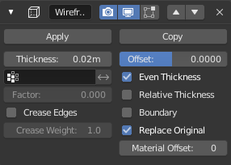

线框修改器¶
线框修改器通过在其面上迭代，将网格转换为线框，收集所有边并将这些边转换为四边形多边形。 请注意，您的网格需要有要线框化的面。 您可以通过给定的修改器选项动态地定义生成的线框的厚度，材质和其他几个参数。
选项¶

线框修改器.¶
- 厚度
线框的深度或大小。
- 偏移量
在 (-1到1) 之间的值控制线框是从原网格的内部还是外部生成。设置为零，偏移 将线框居中于原来的边周围。
- 顶点组
限制修改为仅此顶点组。
- 反转
反转顶点组权重
- 系数
顶点对最终线框结果的影响百分比。
- 折痕边
这个选项适用于与 表面细分修改器 同时使用时. 启用此选项可在其连接处的边创建折痕,并防止大的弯曲交叉。
- 折痕权重
定义接合应该承受多少折痕(0到1)(没有到全部).
- 均衡厚度
通过调整维持尖角的厚度。有时改善质量,但也会增加计算时间。
- 相对厚度
通过边的长度决定边厚度.更长的边更厚.
- 边界范围
创建线框网格做为边界
- 替换原物体
如果启用了此选项,原始网格生成的线框将被取代。如果取消,原始网格将被保留。
- 材质偏移
使用所选的材质索引作为的线框材质,这是应用一个偏移值做为第一个材质。
Warning
线框厚度是一个近似值。而甚至厚度应该产生良好的结果在许多情况下,细长的面会导致难看的尖刺。在这种情况下,您可以减少厚度系数或禁用均衡厚度的选择。